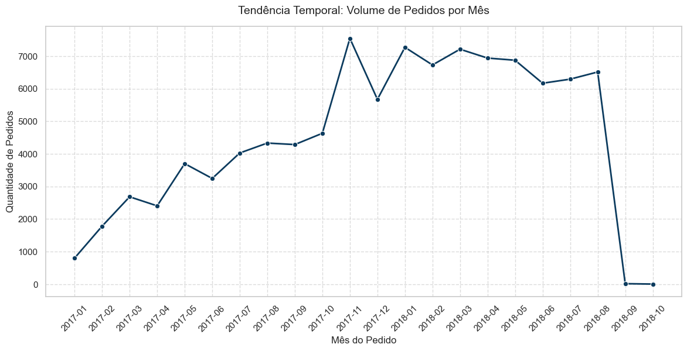
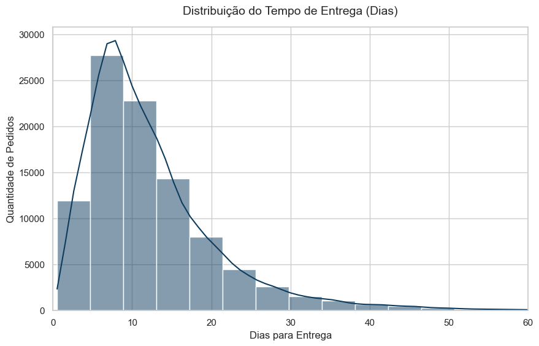
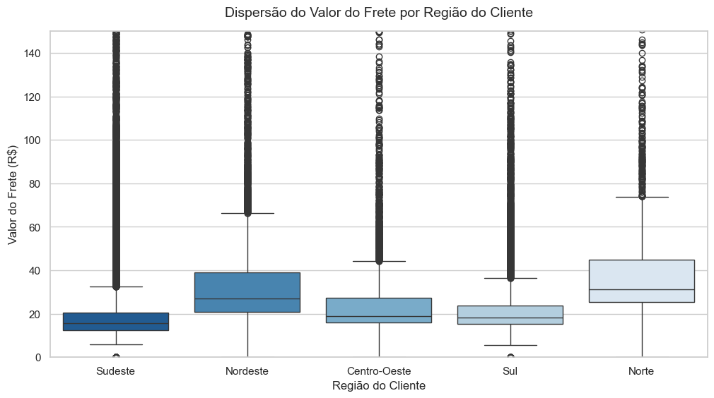
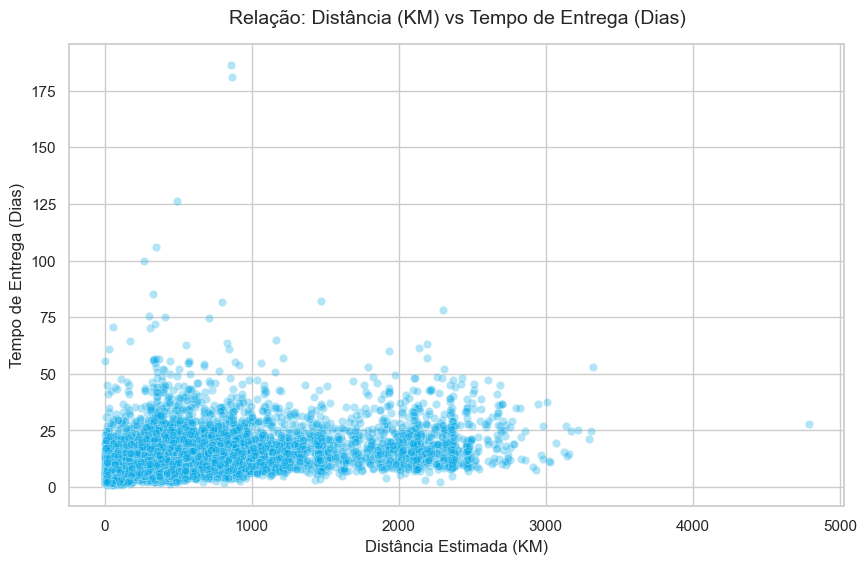
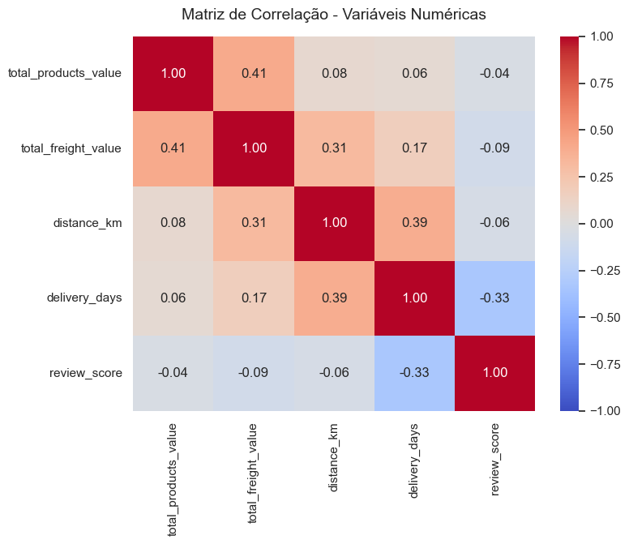

Pedidos totais
Granularidade final sem pedidos duplicados.
Pedidos entregues
Taxa de atraso
Pedidos entregues acima da data estimada.
Tempo médio
Tendência mensal de pedidos
Volume de vendas por mês a partir de 2017.

Leituras-chave
Sinais mais importantes para priorização.
Entrega como centro da experiência
Frete concentrado, mas com outliers
Distância importa na operação
Qualidade da base está pronta
Saúde operacional
Indicadores consolidados da base final.
Pedidos entregues
Pedidos atrasados
Dados completos de distância
Distribuição do tempo de entrega
Concentração, mediana e cauda de atrasos.

Frete por região
Comparação regional da dispersão de valores.

Distância versus entrega
Relação entre quilometragem estimada e prazo real.

Correlações numéricas
Sinais cruzados entre valor, frete, distância, entrega e review.

Qualidade dos dados
Maiores nulos e controles de consistência da base final.
| Indicador | Resultado |
|---|
Fluxo do sistema
Da extração dos dados até a leitura pelo dashboard.